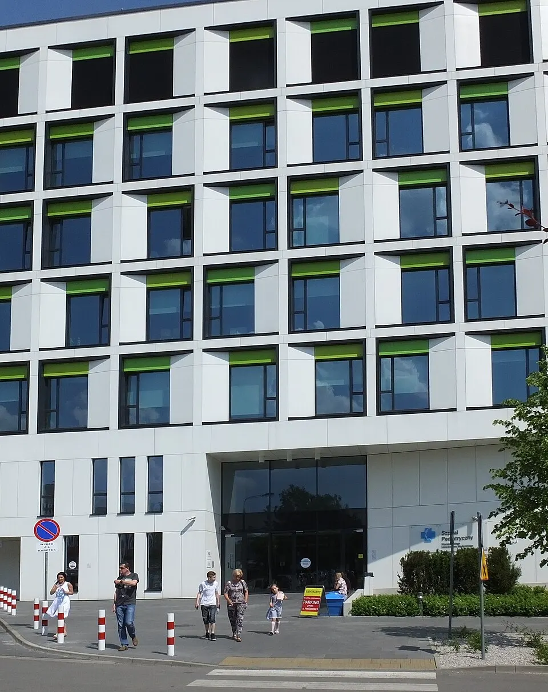

Sprzątanie biur i obiektów
Stałe utrzymanie czystości powierzchni biurowych, korytarzy, sanitariatów i przestrzeni wspólnych — codziennie, kilka razy w tygodniu lub według ustalonego harmonogramu.
Zapytaj o wycenę →Firma sprzątająca · Warszawa i okolice
15 lat doświadczenia w utrzymaniu czystości biur, obiektów publicznych i terenów zewnętrznych. Pełne ubezpieczenie OC, certyfikowana chemia profesjonalna, sprawdzony zespół.
Oferta
Cztery główne obszary, w których pracujemy najczęściej. Jeśli Twój przypadek jest inny — zapytaj, wycenimy indywidualnie.
Stałe utrzymanie czystości powierzchni biurowych, korytarzy, sanitariatów i przestrzeni wspólnych — codziennie, kilka razy w tygodniu lub według ustalonego harmonogramu.
Zapytaj o wycenę →Wieloletnie doświadczenie w realizacji zamówień publicznych — szkoły, urzędy, placówki oświatowe. Znamy specyfikę SWZ i wymogi formalne zamówień publicznych.
Zapytaj o wycenę →Usuwanie pyłu budowlanego, mycie okien i powierzchni po pracach wykończeniowych, przygotowanie lokalu lub obiektu do odbioru i użytkowania.
Zapytaj o wycenę →Pielęgnacja zieleni, sprzątanie parkingów i ciągów pieszych, odśnieżanie i zimowe utrzymanie terenu wokół obiektu.
Zapytaj o wycenę →Cennik
Warszawa i Mazowsze. Ceny za pojedynczą realizację, przy standardowym stopniu zabrudzenia i powierzchniach dostępnych do czyszczenia. Chemia i standardowy sprzęt są wliczone w cenę.
Podane ceny zawierają 23% VAT.
Zakres: obustronne mycie szyb, ram, uszczelek i parapetów w standardowo dostępnych oknach do wysokości 3 m.
| Powierzchnia szyb | Cena brutto za m² |
|---|---|
| Do 20 m² | 18,50 zł |
| 21–50 m² | 15,00 zł |
| 51–150 m² | 12,50 zł |
| 151–500 m² | 10,50 zł |
| Powyżej 500 m² | 8,50 zł |
Okna w mieszkaniach — cena za sztukę
| Rodzaj okna | Cena brutto za szt. |
|---|---|
| Jednoskrzydłowe | 49,00 zł |
| Dwuskrzydłowe | 74,00 zł |
| Trzyskrzydłowe | 92,50 zł |
| Drzwi balkonowe jednoskrzydłowe | 80,00 zł |
Mycie okien po budowie (typowe ślady prac budowlanych): dopłata 50%. Prace z podnośnika lub technikami alpinistycznymi wyceniamy osobno.
Zakres: mycie standardowe to maszynowe usunięcie bieżących zabrudzeń; doczyszczanie gruntowne obejmuje dobraną chemię, szorowanie i zebranie brudnej wody.
| Powierzchnia | Mycie standardowe (brutto) | Doczyszczanie gruntowne (brutto) |
|---|---|---|
| Do 100 m² | 8,00 zł/m² | 19,50 zł/m² |
| 101–300 m² | 6,00 zł/m² | 15,00 zł/m² |
| 301–1000 m² | 4,50 zł/m² | 11,00 zł/m² |
| Powyżej 1000 m² | 3,50 zł/m² | 8,50 zł/m² |
Minimalne zamówienie: mycie standardowe 553,50 zł, doczyszczanie gruntowne 738 zł.
Zakres: podstawowe przygotowanie i odtłuszczenie podłoża oraz nałożenie dwóch warstw polimeru.
| Powierzchnia | Cena brutto za m² |
|---|---|
| Do 100 m² | 31,00 zł |
| 101–300 m² | 26,00 zł |
| 301–1000 m² | 19,50 zł |
| Powyżej 1000 m² | 17,00 zł |
Prace dodatkowe
Zakres: odkurzanie i mycie podłóg, czyszczenie dostępnych powierzchni biurowych, mebli z zewnątrz, kuchni i sanitariatów, opróżnienie koszy.
| Powierzchnia biura | Cena brutto za m² |
|---|---|
| Do 100 m² | 10,00 zł |
| 101–300 m² | 7,50 zł |
| 301–1000 m² | 6,00 zł |
| Powyżej 1000 m² | 5,00 zł |
Cena nie obejmuje prania tapicerki, gruntownego doczyszczania posadzek, mycia okien i prac poremontowych.
Zakres: sprzątanie pomieszczeń, mycie podłóg, odkurzanie, czyszczenie sanitariatów i kuchni, usunięcie kurzu, mycie dostępnych mebli i powierzchni zewnętrznych.
| Powierzchnia | Cena brutto za m² |
|---|---|
| Do 50 m² | 10,50 zł |
| 51–100 m² | 9,00 zł |
| 101–200 m² | 8,50 zł |
| Powyżej 200 m² | 8,00 zł |
Mycie okien, czyszczenie wnętrza szafek i AGD oraz pranie tapicerki to usługi dodatkowe.
Zakres: odpylanie pomieszczeń, czyszczenie dostępnych powierzchni, drzwi, podłóg, zabudowy z zewnątrz i sanitariatów oraz usunięcie typowych, lekkich zabrudzeń budowlanych.
Biura, lokale użytkowe, obiekty komercyjne
| Powierzchnia | Cena brutto za m² |
|---|---|
| Do 100 m² | 21,00 zł |
| 101–300 m² | 18,00 zł |
| 301–1000 m² | 15,00 zł |
| Powyżej 1000 m² | 13,00 zł |
Minimalne zamówienie: 1 107 zł.
Mieszkania i domy po budowie
| Powierzchnia | Cena brutto za m² |
|---|---|
| Do 50 m² | 28,50 zł |
| 51–100 m² | 26,00 zł |
| 101–200 m² | 22,00 zł |
| Powyżej 200 m² | 19,50 zł |
Minimalne zamówienie: 1 045,50 zł.
Oddzielnie rozliczamy: mycie okien, wywóz gruzu i pozostałości po materiałach budowlanych, usuwanie trudnych zabrudzeń z farb, klejów i silikonów oraz prace wymagające specjalistycznego dostępu.
Nie widzisz swojej usługi albo masz nietypowy obiekt? Wycenimy indywidualnie.
Zapytaj o terminZaufali nam
LARES realizuje i realizował usługi utrzymania czystości w obiektach administracji publicznej, placówkach medycznych, naukowych, kulturalnych oraz obiektach handlowych. Zakres poszczególnych zamówień obejmował między innymi regularne sprzątanie powierzchni wewnętrznych, utrzymanie terenów zewnętrznych oraz wykonywanie prac okresowych.


Bezpieczeństwo współpracy
Przy sprzątaniu obiektów firmowych i publicznych liczy się nie tylko efekt, ale i formalności — dokumenty, które zabezpieczają obie strony.
Szybka wycena
Kalkulator daje widełki cenowe w kilka sekund. Dokładną ofertę przygotujemy po krótkiej rozmowie lub wizji lokalnej.
Szacunkowy koszt
— – — zł
Kontakt